Anisotropic winds in a Wolf–Rayet binary identify a potential gamma-ray burst progenitor
Rapidly-rotating WRs - long gamma-ray bursts...
...but at solar metallicity strong line-driven winds cause them to spin down.
WR colliding wind binaries (eg WR+OI) produce dust in a 'pinwheel' spiral, like WR 104. Spiral evolution encodes binary parameters.
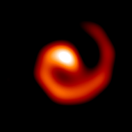Joe Callingham (ASTRON) found a very bright CWB cross-matching Molonglo 843 MHz, 2XMM (X-ray) and WISE (IR) catalogs.
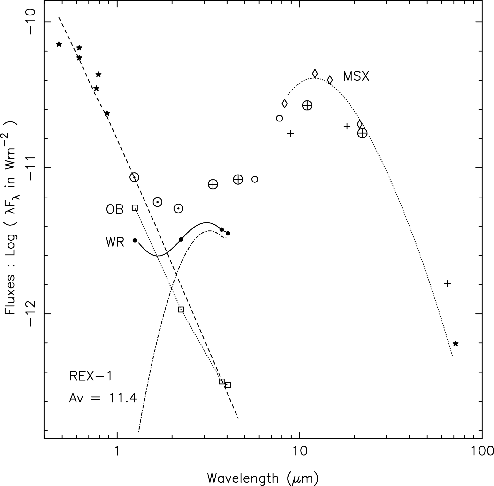2MASS, DSS, XMM
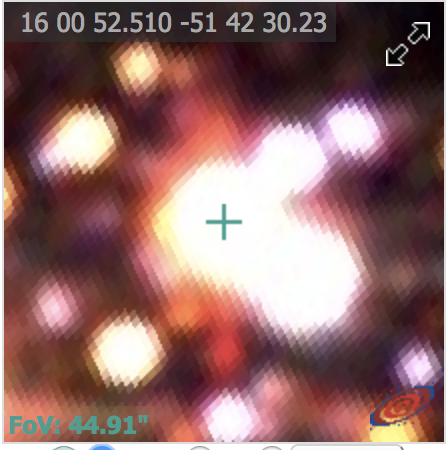 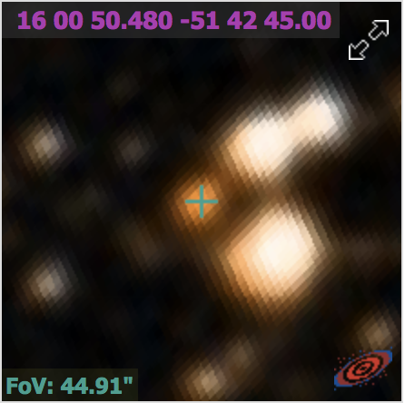 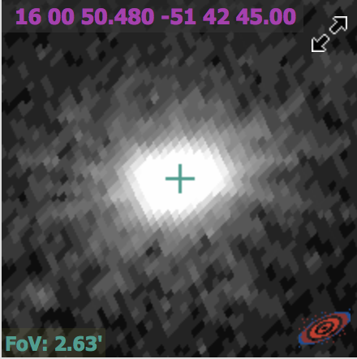SINFONI J+H band spectra indicated a WR component
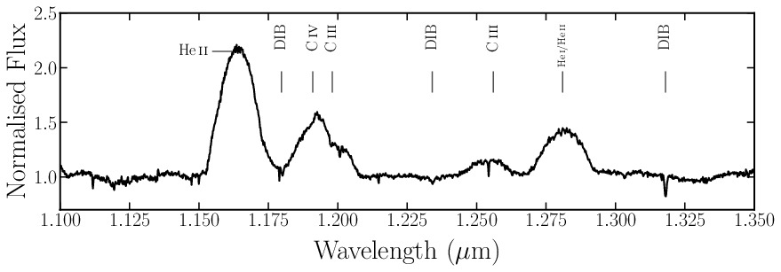IRIS2 AAT spectrum: He 1083 Å line P Cygni profile indicates a ~ 3400 km/s wind speed. Fast!
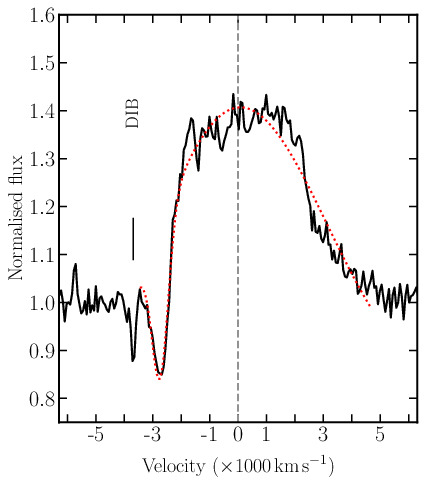So we got VLT/NACO (inset, radio contours) and VISIR (main) images...
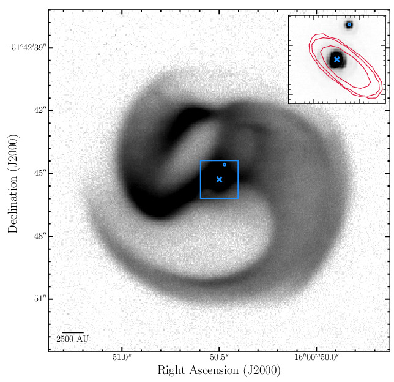Whoah! Never seen a pinwheel this complex before. Wanted second epoch to make a video like before.
Expected ~ 10 pix radial expansion.
*Named for Egyptian god of Chaos, dragon enemy of Ra
Difference with second epoch
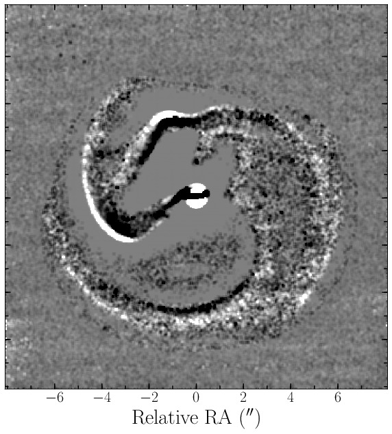It expanded by ~ 1.1 pixels - 570 km/s! Far too slow.
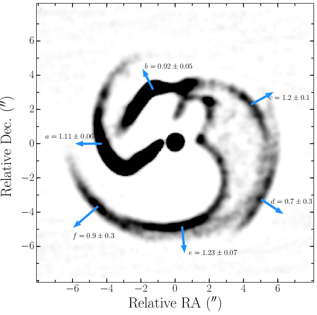Our best model fits a very high opening angle shock, indicating momentum parity between winds. 2x WR?
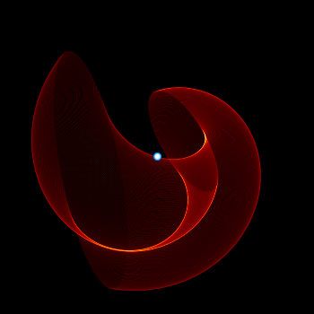This is supported by ATNF VLBI radio imaging of the shock - curvature is real
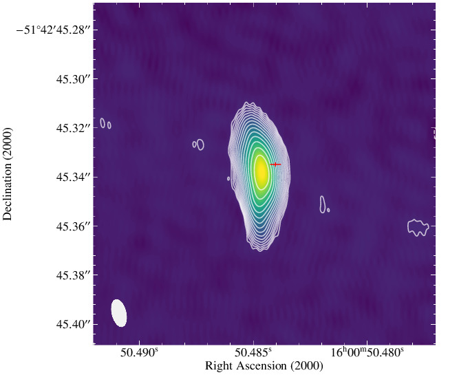a signature of rapid rotation known in LBVs but never yet observed in Galactic WRs.
LGRB progenitor?
Binary interaction?
Why is it so bright - what is the nature of the central engine?
we really need ALMA to look for cold dust.
This is the beginning of an adventure to understand it!
Questions?